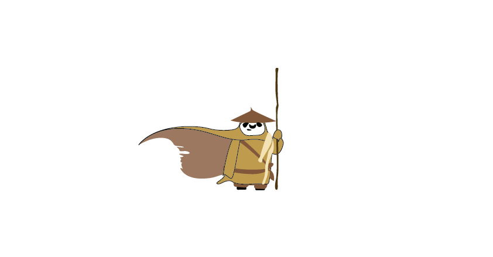
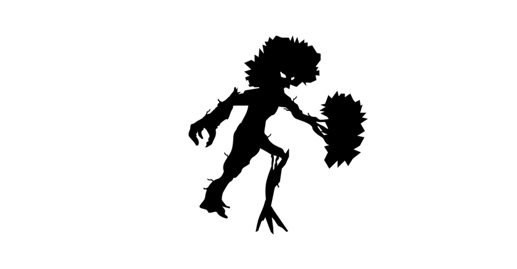
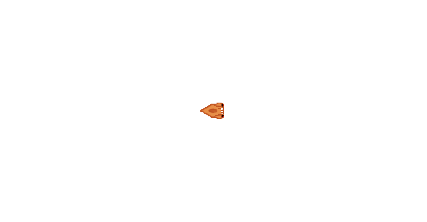

These are some of the animated characters and graphic assets that I created for indie projects. Some are my own ideas, others are based on concept created by other people.
≈
Δ
>
<

The Angry Marine Launcher
I only created the animated frames for this one, the idea's author is unknown.

The Bear
This is a run-cycle animation for an original character.

The Living Doll
This is an idle animation for an original character.

The Robot
This is a run-cycle animation for an original character.

The Panda
Original character animated attack sequence.

The Panda 2
Original character animated idle.

The Plantman
Original character animated walk-cycle.

The Small Robot
Original character animated walk-cycle.

The Alien Ant
Original character animated walk-cycle (top-view).

The Alien Ant Larvae
Original character animated walk-cycle (top-view).

The Water
Animated water asset for a 2D top-down view.